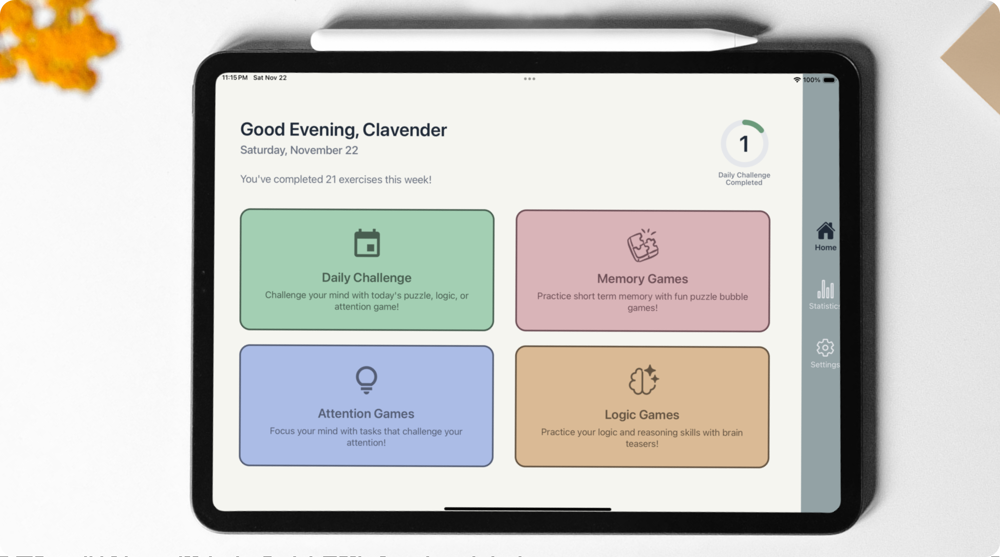
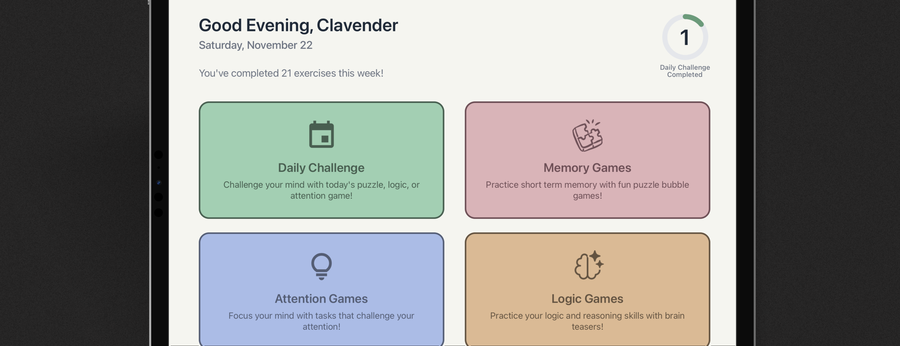
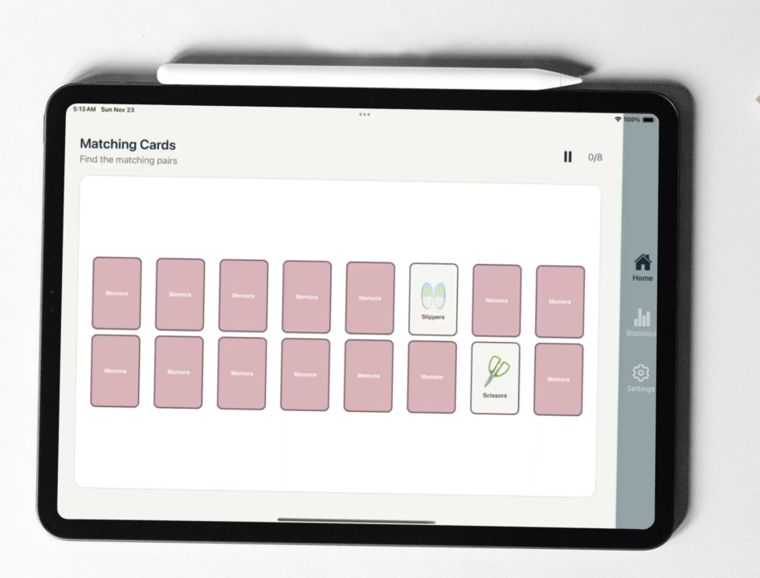
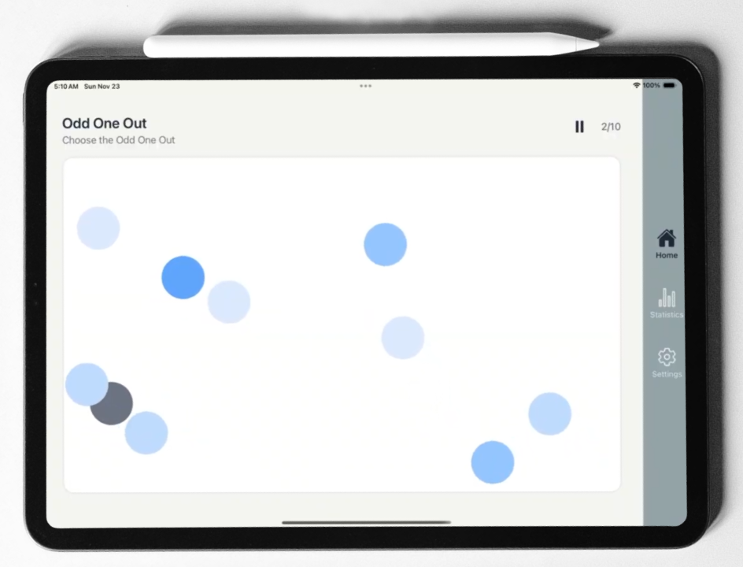
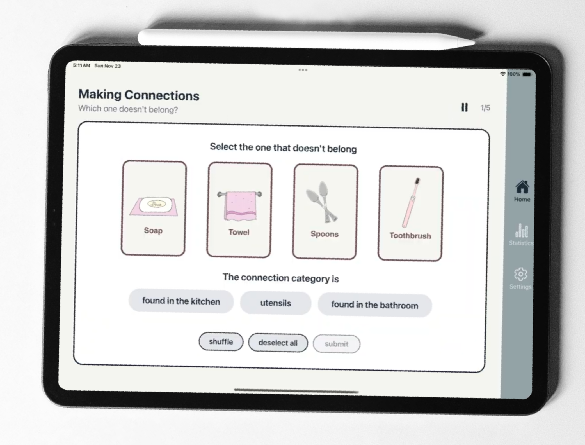
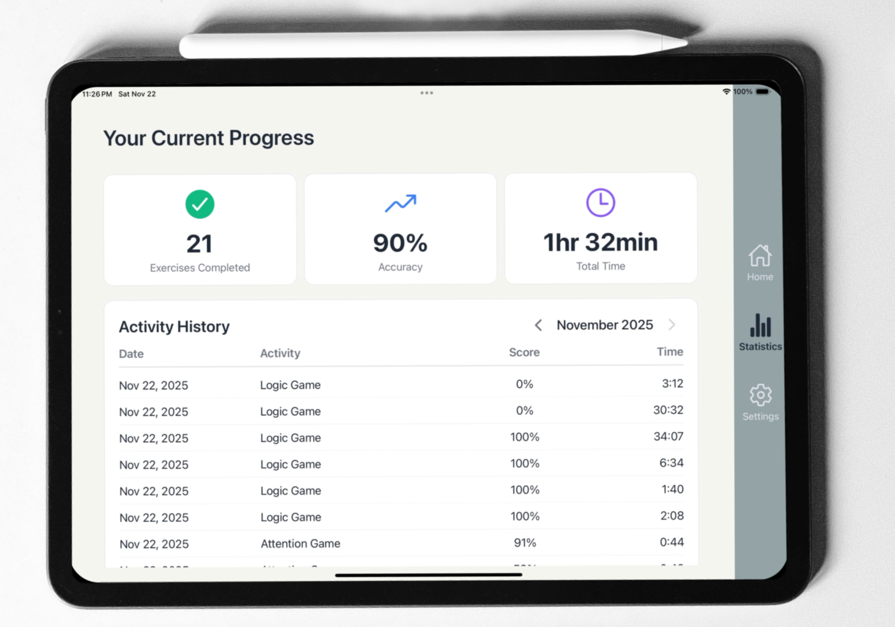
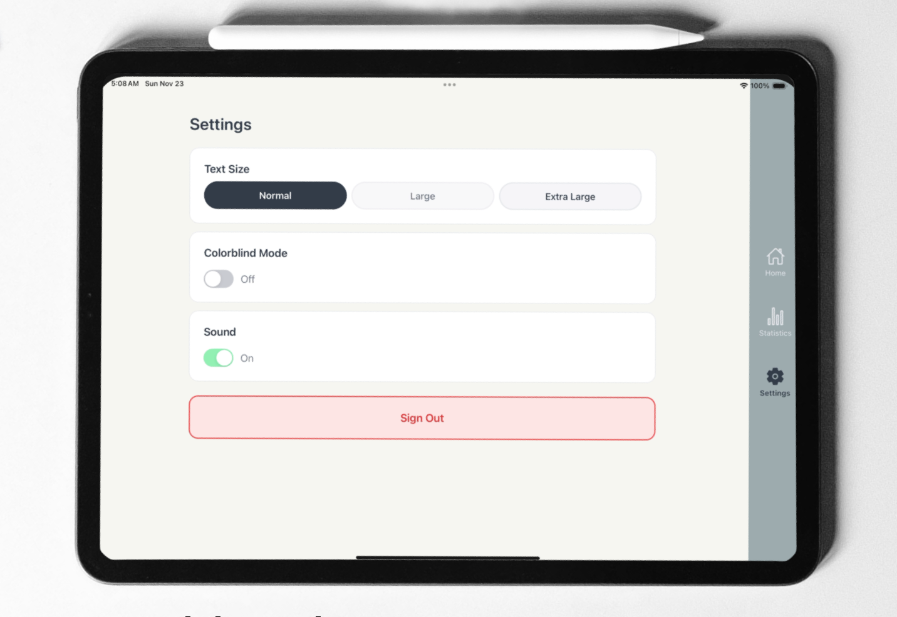
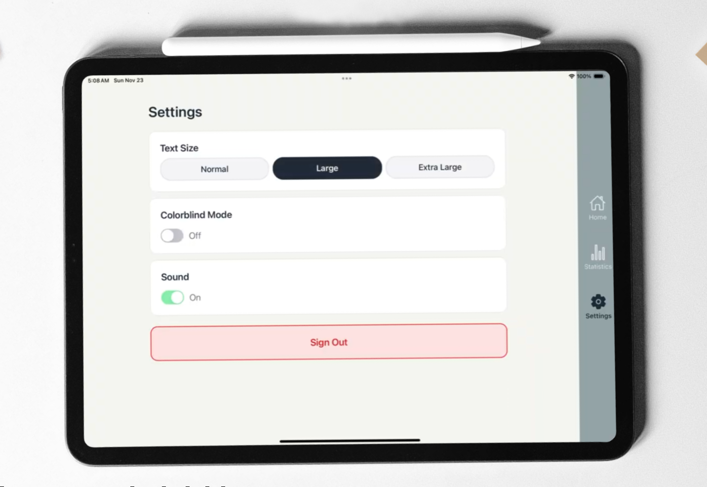
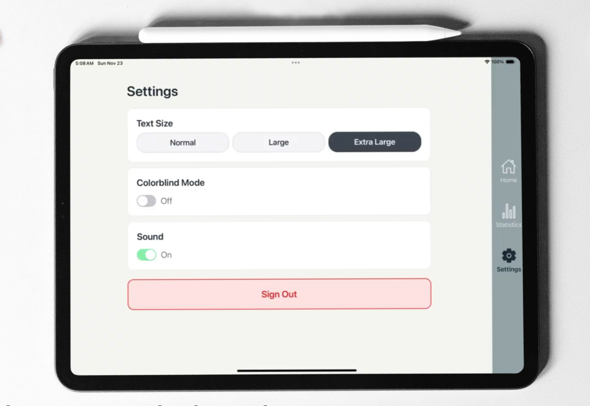

A new way to approach
cognitive decline

Overview
Memora is a cross-platform application, optimized for iPad, that engages elderly users in short, evidence-based cognitive exercises.
Its primary goal is to enhance memory and attention, serving as both a preventive measure and a potential delay of cognitive decline, including early effects of dementia. By encouraging consistent, daily engagement, Memora supports users in maintaining long-term cognitive health, potentially reducing future challenges associated with memory loss.
The design prioritizes simplicity, motivation, and emotional comfort — allowing users to complete exercises at their own pace in a supportive environment.
Memora's goal aligns with SDG 3: Good Health and Well-Being by promoting preventive mental care and enhancing the quality of life for an aging population. This contributes to SDG 3.4 — reducing premature mortality from non-communicable diseases through prevention and promoting mental health and well-being.
Background
Cognitive decline is one of the most pressing public health challenges of our time — yet most digital interventions fail to account for how older adults actually interact with technology.
Research from the National Institute on Aging (2019) shows that frequent participation in cognitively stimulating activities can help delay the onset of cognitive decline. However, existing apps are often designed with younger users in mind, making them inaccessible, frustrating, or simply unused by the elderly population they aim to help.
Memora was designed from the ground up with the elderly user at the center — not as an afterthought.
Memory, attention, and logic — the three key cognitive areas Memora targets through daily exercises.
Daily session length, designed to be achievable and habit-forming without causing fatigue.
The Process
Our design process was grounded in HCI research and evidence-based design principles, ensuring every decision was informed by how elderly users perceive and interact with digital interfaces.
Understanding the User
Older adults experience age-related declines in visual acuity, contrast sensitivity, fine motor control, reaction speed, and hand-eye coordination. These changes directly affect how they engage with digital interfaces — making perception and interaction design critical factors in this project's success.
Research by Chiu, Hwang, and Tseng (2020) highlights that older adult users prefer meaning through images rather than text, enhancing comprehension and reducing cognitive load. Ko et al. (2022) further suggests that older adults perform best with brief, meaningful tasks paired with text labels — enabling them to connect interface elements to real-world concepts.
Design Principles
Minimalist sans-serif typeface, structured layouts, and larger prominent buttons to support easy recognition.
Action feedback, visual cues, and image-forward design to help users engage without fatigue.
Single-action gestures only — tapping, not swiping or dragging. Generous spacing between all interactive elements.
Warm, medium-saturation colour palette to promote calm, engagement, and visual clarity for older eyes.
The Designs
Home Screen
The home screen greets users by name and presents four clearly distinguished game modes as large, tappable cards. Visual hierarchy, colour coding, and icons help users quickly identify and navigate to their preferred activity.

The Games
Each game targets a specific cognitive domain, using familiar real-world scenarios to minimise learning curve and maximise comfort.

Match-It
A classic card-pairing format featuring everyday household objects — spoons, toothbrushes, hats — to stimulate recognition and episodic memory recall through familiar, emotionally comfortable imagery.

Visual Search
Users identify specific target stimuli among distractors, reflecting everyday visual scanning tasks like searching for ingredients or reading text — measuring speed and accuracy.

Pattern & Reason
Pattern recognition, decision-making, and problem-solving through everyday scenarios. Promotes transferable reasoning skills that support real-world function.
A randomized mix of memory, attention, and logic tasks delivered in short 5–10 minute sessions. Designed to encourage habit-building and sustained long-term engagement without overwhelming the user.
Statistics Screen
A recent review by Moore et al. (2021) found that self-tracking technologies allow older adults to see feedback and progress, supporting continued use and goal-oriented behaviour. The statistics screen in Memora translates this into clear visual performance indicators — showing users how they are improving over time and reinforcing motivation to return daily.

Accessibility
Accessibility was not an add-on — it was the foundation. The settings screen allows users to customise their experience in three key ways.

Default
Large Text
Extra Large TextText Size
Three adjustable text size options ensure readability for users with varying levels of visual acuity.
Colour Mode
High-contrast and reduced-glare modes accommodate different lighting conditions and visual sensitivities.
Sound
Audio feedback can be toggled on or off, allowing users to customise their sensory experience.
Results & Takeaways
Memora delivered an accessible, user-friendly system that elderly individuals can integrate into their daily routines at home — meeting both its usability and wellbeing goals.
Key Outcomes
Accessible daily engagement. The combination of large touch targets, simple gestures, and familiar visual content made the app approachable for elderly users with varying levels of digital literacy.
Evidence-based design. Every UI decision was grounded in HCI research specific to elderly users, creating a design that is both intuitive and cognitively appropriate.
Scalable accessibility system. The three-tier text sizing and customisable settings lay the groundwork for a flexible, inclusive platform that can grow with users' needs.
Takeaways
Design for the margins. Designing for users with the most constraints — elderly adults with motor and visual decline — produces interfaces that are better for everyone.
Research is not optional. Without an understanding of elderly-specific HCI research, it would have been easy to design an app that looked good but failed its users entirely.
Familiarity reduces friction. Using everyday objects and real-world scenarios in exercises removed the learning curve and immediately made the experience feel safe and engaging.